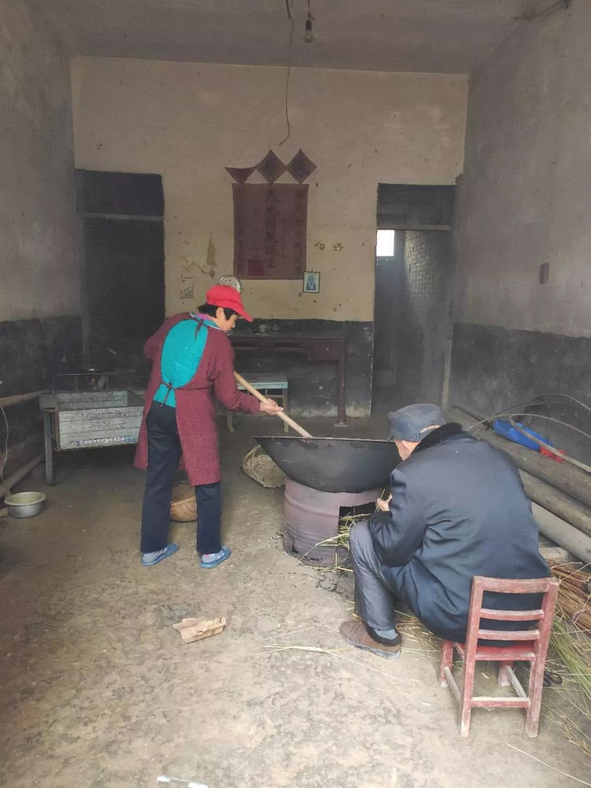
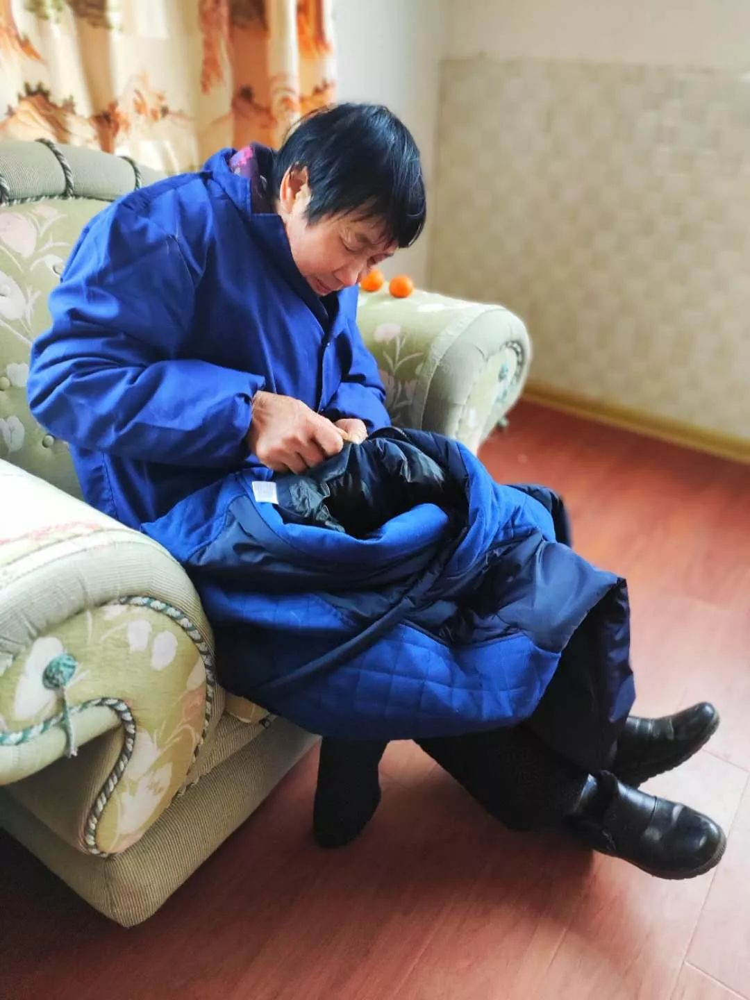
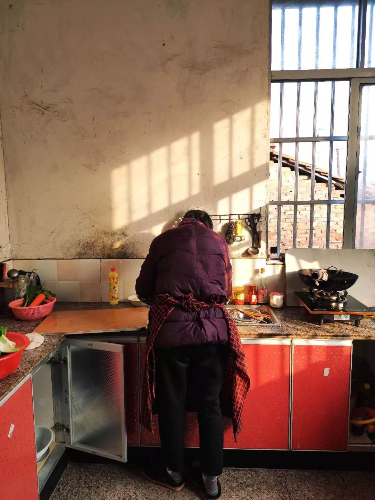

与父母亲有关的点滴
原文链接 备份链接 （一） 早上去长江大堤上散步。不一会儿，远远地看见一个人走过来，很像是母亲，等她走近，一看还真是母亲。问她为什么来了，她说：“我一直在寻你。”我又问出了什么事，母亲笑道：“就是想跟你一起走走。”我们一起转身百米港走去， …

（一）
下楼一看，父母亲都不见了。
寻到隔壁老屋，母亲在炒花生，父亲帮着烧火。
我突然想起是我昨天说了一嘴，“花生吃完咯。”
没料到今天他们炒了一大簸箕花生。我说这也太多了。
母亲说：“等以后你回北京，可以带给同事们吃。”

（二）
母亲来我房间坐下，翻看我的书，“看书不累人啊？”
我说：“不累。”
母亲又问：“写书累不累？”
我说：“累，但我喜欢。”
母亲笑道，“你写么子事？”
我说：“写你啊，我好几本书都写你。你是书里的主要人物。”
母亲有点害羞，“我有么子好写的？”
我说：“要写你的东西要几多有几多。永远写不够。”

（三）
拉链坏掉了，母亲一直在尝试弄。
我转头对她说：“不用这么麻烦，我试了好多次都没搞好。以后回北京找个裁缝铺就行咯。”
母亲说：“那么行哩。我反正没得事，慢慢来。”
我又回头做自己的事情。
母亲问我：“你多买点衣裳穿。每年回来，你总是那几件。”
我说：“够穿啊，这些衣裳又没穿坏。”
母亲说：“那你也莫老给我们买衣裳，我们也够穿。”

（四）
母亲在厨房洗碗，我在扫地。
母亲问我：“在屋里这么长时间，你待得烦不烦？”
我说：“不烦……你不是已经烦了？”
母亲笑道：“不晓得几烦哩！”
我失落地问：“你烦么子？”
母亲说：“我烦的是不晓得你几时走……”

（五）
下午没事，母亲会在一楼前厢房看电视剧《麻雀》。
我有时候在楼上忙完了事情下去晃，跟她一起看。
母亲起身问：“你饿不饿？”我说不饿。
过一会儿，她又问：“要不要喝饮料？”我说不用。
再过会儿，母亲又要问什么，我说：“不需要管我咯，好好看电视。”
母亲说好，过了两分钟，我感觉头上有一只手在抚摸，一回头是母亲，“你做么事？”
她放下手说：“你该理发了。”

邓安庆
微信扫一扫赞赏作者 赞赏
长按二维码向我转账
受苹果公司新规定影响，微信 iOS 版的赞赏功能被关闭，可通过二维码转账支持公众号。
原文链接 备份链接 （一） 早上去长江大堤上散步。不一会儿，远远地看见一个人走过来，很像是母亲，等她走近，一看还真是母亲。问她为什么来了，她说：“我一直在寻你。”我又问出了什么事，母亲笑道：“就是想跟你一起走走。”我们一起转身百米港走去， …
原文链接 备份链接 每天晚上泡脚时，我跟母亲总有一件事情要做：搬来小板凳，母亲坐下，我一边泡脚一边给她捏肩。她低下头，露出脖子，我按下去时，她“呀”了一声，我问是不是力度大了，她说没事，“一天到黑窝在房里看电视，总是这里疼那里疼，要是去地 …
原文链接 备份链接 今天是武汉封城的第十四天，也是阳光灿烂的一天。 这两周发生了很多很多事情，简直是人生中最漫长的两周。武汉人民度过了一个前所未有的春节，而所有人的心情，随着好消息和坏消息的交叉传来而起起伏伏。 昨天情绪崩溃，很快打起精 …
原文链接 备份链接 今天是武汉封城的第十一天。 封闭这么久，对于一个人口过千万的特大城市来说，是一个前所未有的挑战。 今天下雨了，天气很糟。典型的南方冬天，又潮又冷。 在夜色中看到邻居家的灯火已经是我最欣慰的事情，这个时候万家灯火让我觉得 …
原文链接 备份链接 早上一醒来，感觉眼睛肿肿，身子乏力。母亲在楼下喊了很多次让我起床吃饭，我也没有力气答应。母亲后来形容自己的心情，“你每天起得都好早，今天八点多了，你还没有起床，我心下一沉。”我立马明白母亲担心我是不是感染了。 毕竟我是 …